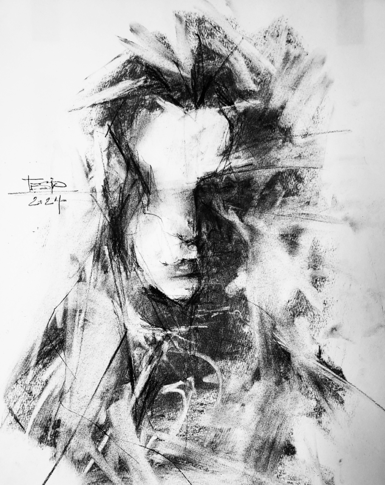
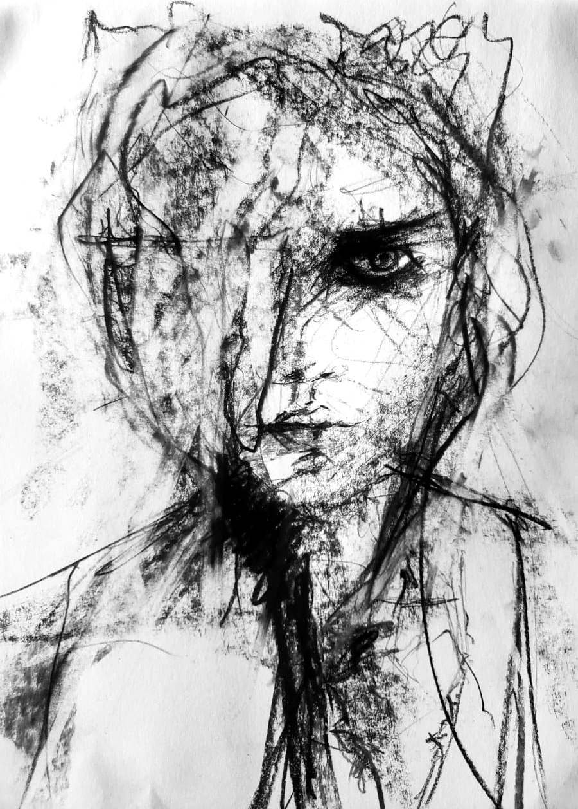
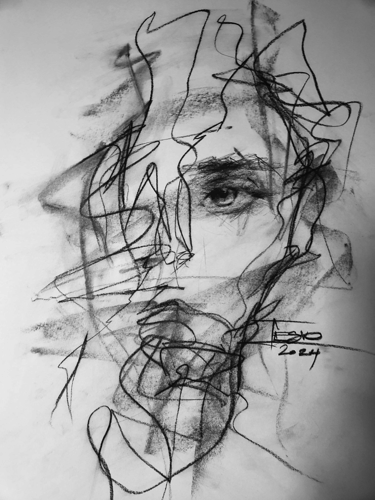
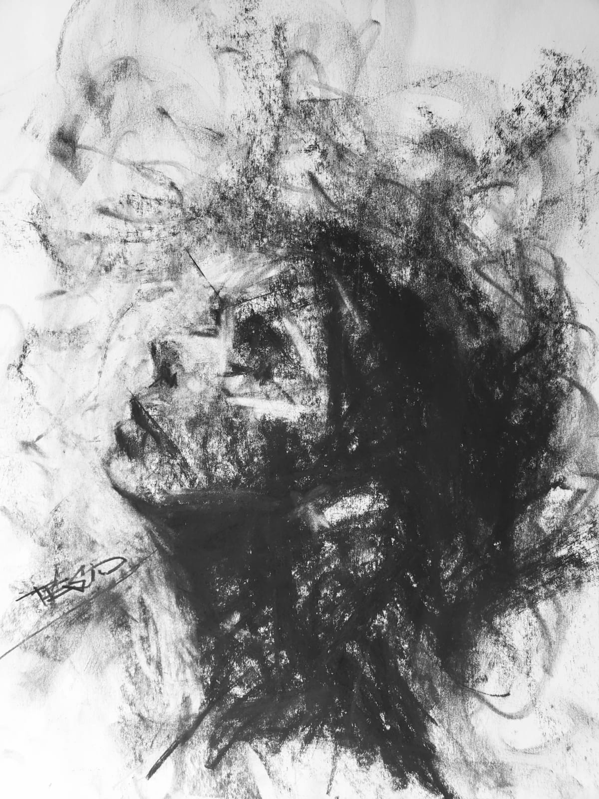

Artista visual en grafito y carbón.
Identidad · memoria · proceso creativo
Grafito y carbón sobre papel.
La figura humana se presenta como residuo. Una forma atravesada por la memoria y el desgaste. El cuerpo no se muestra completo, sino como huella, fragmento y tensión. El carbón no describe: insiste sobre lo que permanece.
Grafito y carbón sobre papel.
La figura comienza a perder unidad. El cuerpo deja de sostenerse como forma cerrada y se manifiesta como campo de tensión y ruptura.
La identidad no desaparece, pero se quiebra: persiste en fragmentos, gestos incompletos y zonas de fricción. El carbón no construye, erosiona.
Las obras que conforman esta antesala preparan el ingreso a la serie central. La identidad deja de ser umbral para convertirse en conflicto.
Grafito y carbón sobre papel.
La figura permanece suspendida en una región de sombra. La tensión no se resuelve ni avanza: se densifica. La identidad no desaparece, pero se vuelve opaca.
Grafito y carbón sobre papel.
Dos presencias coexisten en un mismo cuerpo. La identidad deja de ser estable y se manifiesta como superposición y conflicto. El rostro no unifica: tensiona.
Grafito y carbón sobre papel.
El cuerpo se reduce a gesto. No hay resolución ni síntesis: solo resto, huella y persistencia material.